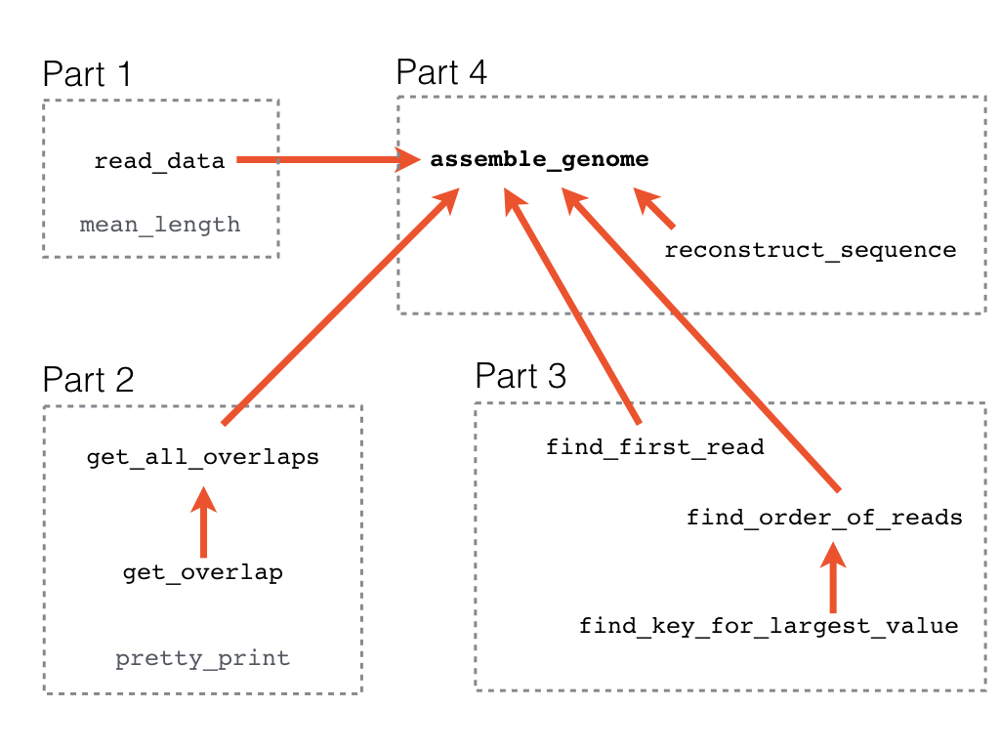

60 Genome assembly
This chapter is a programming project where you will assemble a small genomic sequence from a set of short sequencing reads.
In genome assembly, many short sequences (reads) from a sequencing machine are assembled into long sequences – ultimately chromosomes. This is done by ordering overlapping reads so that they together represent genomic sequences. For example, given these three reads: AGGTCGTAG, CGTAGAGCTGGGAG, GGGAGGTTGAAA, ordering them based on their overlap like this
AGGTCGTAG
CGTAGAGCTGGGAG
GGGAGGTTGAAAproduces the following genomic sequence:
AGGTCGTAGAGCTGGGAGGTTGAAAReal genome assembly is, of course, more sophisticated than what we do here, but the idea is the same. To limit the complexity of the problem, we make two simplifying assumptions:
- There are no sequencing errors, implying that true overlaps between reads can be identified as perfectly matching overlaps.
- No reads are nested in other reads. I.e., They are never a smaller part of another read.
The second assumption implies that overlaps are always of this type:
CGTAGAGCTGGGAG
GGGAGGTTGAAAand never of this type:
CGTAGAGCTGGGAG
AGAGCTGIn this project, you will be asked to write functions that solve the problem of assembling a genomic sequence. Each function solves a small problem, and you may need to call these functions inside other functions to put together solutions to larger subproblems.
Download the files you need for this project:
https://munch-group.org/bioinformatics/supplementary/project_files
sequencing_reads.txtcontains the sequencing reads.
You also need to download the two project files:
assemblyproject.pyis an empty file where you must write your code.test_assemblyproject.pyis the test program that lets you test the code you write inassemblyproject.py.
Put the files in a folder dedicated to this project. On most computers you can right-click on the link and choose “Save file as…” or “Download linked file”.
Now open each file in your editor and look at what is in sequencing_reads.txt. (Do not change it in any way, and do not save it after viewing. If your editor asks you if you want to save it before closing, say no.) How many sequences are there in each file?
The project is split into four parts:
- Read and analyze the sequencing reads.
- Compute the overlaps between reads.
- Find the right order of reads.
- Reconstruct the genomic sequence.
Here is an overview of the functions you will write in each part of the project and of which functions are used by other functions.

Make sure to read the entire exercise and understand what you are supposed to do before you begin!
Read and analyze the sequencing reads
The first task is to read and parse the input data. The sequence reads for the mini-assembly are in the file sequencing_reads.txt. The first two lines of the file look like this:
Read1 GGCTCCCCACGGGGTACCCATAACTTGACAGTAGATCTCGTCCAGACCCCTAGC
Read2 CTTTACCCGGAAGAGCGGGACGCTGCCCTGCGCGATTCCAGGCTCCCCACGGGEach line represents a read. The first field on each line is the name of the read, and the second field is the read sequence itself. So for the first line, Read1 is the name, and ATGCG... is the sequence.
Read the sequencing reads into your program
Write a function, read_data, that takes one argument:
- A string, which is the name of the data file.
The function must return
- A dictionary, where the keys are the names of reads and the values are the associated read sequences. Both keys and values must be strings.
Example usage:
read_data('sequencing_reads.txt')should return a dictionary with the following content (maybe not with key-value pairs in that order)
{'Read1': 'GGCTCCCCACGGGGTACCCATAACTTGACAGTAGATCTCGTCCAGACCCCTAGC',
'Read3': 'GTCTTCAGTAGAAAATTGTTTTTTTCTTCCAAGAGGTCGGAGTCGTGAACACATCAGT',
'Read2': 'CTTTACCCGGAAGAGCGGGACGCTGCCCTGCGCGATTCCAGGCTCCCCACGGG',
'Read5': 'CGATTCCAGGCTCCCCACGGGGTACCCATAACTTGACAGTAGATCTC',
'Read4': 'TGCGAGGGAAGTGAAGTATTTGACCCTTTACCCGGAAGAGCG',
'Read6': 'TGACAGTAGATCTCGTCCAGACCCCTAGCTGGTACGTCTTCAGTAGAAAATTGTTTTTTTCTTCCAAGAGGTCGGAGT'}Here is some scaffolding code to get you started:
def read_data(file_name):
input_file = open(file_name)
# ...
for line in input_file:
# ...
# ...
input_file.close()
The line variable in the for loop holds each line in the file, including the \n newline character at the end. You can use the’ split’ method of strings to split each line into the name of the read and the read sequence. You can see the documentation for that method by typing pydoc str.split in your terminal.
Compute the mean length of reads
After writing that function, we would like to get an idea about the length of the reads. There are often too many reads to look at manually, so we need to make a function that computes the mean length of the reads.
Write a function, mean_length, that takes one argument:
- A dictionary, in which keys are read names and values are read sequences (this is a dictionary like that returned by
read_data).
The function must return
- A float, which is the average length of the sequence reads.
One way to do this is to loop over the keys in the dictionary like this:
def mean_length(reads):
count = 0
total = 0
for name in reads:
seq = reads[name]
# ...
# ...
# ...
return total / countRemember that you can use the len function to find the length of a read.
Compute overlaps between reads
The next step is to determine which reads overlap each other. We need a function that takes two read sequences and computes their overlap to do that. Remember that in the input data, none of the reads are completely nested in another read.
Compute the overlap between two reads
We know there are no sequencing errors so that the sequence match will be perfect in the overlap. To compute the overlap between the 3’ (right) end of the left read with the 5’ (left) end of the righthand read, you need to loop over all possible overlaps, honoring that one sequence is the left one and the other is the right one. In the for loop, start with the largest possible overlap ( min(len(left), len(right))) and evaluate smaller and smaller overlaps until you find an exact match.
Write a function, get_overlap, that takes two arguments
- A string, which is the lefthand read sequence.
- A string, which is the righthand read sequence.
The function must return
- A string, which is the overlapping sequence. If there is no overlap, it should return an empty string.
Example usage:
s1 = "CGATTCCAGGCTCCCCACGGGGTACCCATAACTTGACAGTAGATCTC"
s2 = "GGCTCCCCACGGGGTACCCATAACTTGACAGTAGATCTCGTCCAGACCCCTAGC"
get_overlap(s1, s2)should return the string
'GGCTCCCCACGGGGTACCCATAACTTGACAGTAGATCTC'and get_overlap(s2, s1)
should return the string
'C'From these two examples, it seems that s1 and s2 overlap and that s1 is the left and s2 is the right. Treating s2 as the left one and s1 as the right one only gives an overlap of one base (we expect a few bases of overlap even for unrelated sequences).
Compute all read overlaps
When you have written get_overlap, you can use it to evaluate the overlap between all pairs of reads in both left-right and right-left orientations.
Write a function, get_all_overlaps, that takes one argument:
- A dictionary with read data as returned by
read_data.
The function must return
- A dictionary of dictionaries specifying the number of overlapping bases for a pair of reads in a specific left-right orientation. Computing the overlap of a read to itself is meaningless and must not be included. Assuming the resulting dictionary of dictionaries is called
d, thend['Read2']will be a dictionary where keys are the names of reads that have an overlap with read'Read2'when'Read2'is put in the left position, and the values for these keys are the number of overlapping bases for those reads.
Example usage: assuming that reads is a dictionary returned by read_data then:
get_all_overlaps(reads)should return the following dictionary of dictionaries (but not necessarily with the same ordering of the key-value pairs):
{'Read1': {'Read3': 0, 'Read2': 1, 'Read5': 1, 'Read4': 0, 'Read6': 29},
'Read3': {'Read1': 0, 'Read2': 0, 'Read5': 0, 'Read4': 1, 'Read6': 1},
'Read2': {'Read1': 13, 'Read3': 1, 'Read5': 21, 'Read4': 0, 'Read6': 0},
'Read5': {'Read1': 39, 'Read3': 0, 'Read2': 1, 'Read4': 0, 'Read6': 14},
'Read4': {'Read1': 1, 'Read3': 1, 'Read2': 17, 'Read5': 2, 'Read6': 0},
'Read6': {'Read1': 0, 'Read3': 43, 'Read2': 0, 'Read5': 0, 'Read4': 1}}You can use the get_overlap function you just made to find the overlap between a pair of reads. To generate all combinations of reads, you need two for-loops. One looping over reads in the left position, and another (inside the first one) looping over reads in the right position. Remember that we do not want the overlap of a read to itself, so there should be an if-statement checking that the left and right reads are not the same.
Print overlaps as a nice table
The dictionary returned by get_all_overlaps is a bit messy. We want to print it in a nice matrix-like format so we can better see which pairs overlap in which orientations.
This pretty_print function should take one argument:
- A dictionary of dictionaries as returned by
get_all_overlaps.
The function should not return anything but must print a matrix exactly as shown in the example below with nicely aligned and right-justified columns. The first column must hold names of reads in left orientation. The top row holds names of reads in right orientation. The remaining cells must each have the number of overlapping bases for a left-right read pair. The diagonal corresponds to overlaps with the read itself. You must put dashes in these cells.
Example usage: assuming that overlaps is a dictionary of dictionaries returned by get_all_overlaps then:
pretty_print(overlaps)should print exactly
Read1 Read2 Read3 Read4 Read5 Read6
Read1 - 1 0 0 1 29
Read2 13 - 1 0 21 0
Read3 0 0 - 1 0 1
Read4 1 17 1 - 2 0
Read5 39 1 0 0 - 14
Read6 0 0 43 1 0 -This function is hard to get completely right. So, to spare you the frustration, this one is on me:
def pretty_print(d):
print(' ', end='')
for j in sorted(d):
print("{: >6}".format(j), end='')
print()
for i in sorted(d):
print("{: >6}".format(i), end='')
for j in sorted(d):
if i == j:
s = ' -'
else:
s = "{: >6}".format(d[str(i)][str(j)])
print(s, end='')
print()Make sure you understand how it works. You can look up in the documentation what "{: >6}".format(i) does.
Find the correct order of reads
Now that we know how the reads overlap, we can chain them pair by pair from left to right to get the order in which they represent the genomic sequence. To do this, we take the first (left-most) read and identify which read has the largest overlap at its right end. Then we take that read and find the read with the largest overlap to the right end of that - until we reach the rightmost (last) read.
Find the first read
The first thing you need to do is to identify the first (leftmost) read so we know where to start. This read is identified as the one that has no significant (>2) overlaps to its left end (it only has a good overlap when positioned to the left of other reads). In the example output from pretty_print above, the first read would be read 'Read4' because the 'Read4' column has no significant overlaps (no one larger than two).
We break the problem in two and first write a function that gets all the overlaps to the left end of a read (i.e., when it is in the right position):
Write a function, get_left_overlaps, that takes two arguments:
- A dictionary of dictionaries as returned from
get_all_overlaps. - A string, which represents the name of a read.
The function must return
- A sorted list of integers, which represent the overlaps of other reads to its left end.
Example usage: assuming that overlaps is a dictionary of dictionaries returned by get_all_overlaps then.
get_left_overlaps(overlaps, 'Read1')should return
[0, 0, 1, 13, 39]Once you have made a list of left overlaps, you can use the built-in function sorted to make a sorted version of the list that you can return from the function.
OK, now that we have a function that can find all the overlaps to the left end of a given read, all we need to do is find the particular read with no significant (>2) overlaps to its left end.
Write a function, find_first_read, that takes one argument:
- A dictionary of dictionaries as returned from
get_all_overlaps.
The function must return
- A string containing the name of the first read.
Example usage: assuming that overlaps is a dictionary of dictionaries returned by get_all_overlaps then.
find_first_read(overlaps)should return
'Read4'Find the order of reads
Now that we have the first read, we can find the correct order of the reads. We want a list of the read names in the right order.
Given the first (left) read, the next read is the one that has the largest overlap to the right end of that read. We use our dictionary of overlaps to figure out which read that is. If the first read is 'Read4', then overlaps['Read4'] is a dictionary of reads with overlap to the right end of read 'Read4'. So, to find the name of the read with the largest overlap, you must write a function that finds the key associated with the largest value in a dictionary. We do that first:
Write a function, find_key_for_largest_value, that takes one argument:
- A dictionary.
The function must return the key associated with the largest value in the dictionary argument.
Having written find_key_for_largest_value, you can use it as a tool in the function that finds the order of reads:
Write a function, find_order_of_reads, that takes two arguments:
- A string, which is the name of the first (left-most) read (that is returned by
find_first_read). - A dictionary of dictionaries of all overlaps (that returned by
get_all_overlaps).
The function must return
- A list of strings, which are read names in the order in which they represent the genomic sequence.
You know the first read is given by the first argument to the function. You also know that you can find the next read in the chain of overlapping reads by using the find_key_for_largest_value function. You should keep adding reads to the chain as long as the overlap is larger than two (you can use a for loop with an if statement inside to check that the overlap is larger than 2).
Example usage: assuming that overlaps is a dictionary of dictionaries returned by get_all_overlaps then:
find_order_of_reads('Read4', overlaps)should return:
['Read4', 'Read2', 'Read5', 'Read1', 'Read6', 'Read3']Before you implement the function, make sure you understand why this is the right list of read names.
Reconstruct the genomic sequence
Now that you have the number of overlapping bases between reads and the correct order of the reads, you can reconstruct the genomic sequence.
Reconstruct the genomic sequence from the reads
Write a function, reconstruct_sequence, that takes three arguments:
- A list of strings, which are the names of reads in the order identified by
find_order_of_reads. - A dictionary, with read data as returned from
read_data. - A dictionary of dictionaries with overlaps as returned from
get_all_overlaps.
The function must return
- A string, which is the genomic sequence.
Example usage: assuming that order is the list of strings returned by find_order_of_reads, that reads is the dictionary returned by read_data and that overlaps is a dictionary of dictionaries returned by get_all_overlaps then:
reconstruct_sequence(order, reads, overlaps) should return one long DNA string (I had to break it in three to make it fit on the page):
TGCGAGGGAAGTGAAGTATTTGACCCTTTACCCGGAAGAGCGGGACGCTGCCCTGCGCGATT
CCAGGCTCCCCACGGGGTACCCATAACTTGACAGTAGATCTCGTCCAGACCCCTAGCTGGTA
CGTCTTCAGTAGAAAATTGTTTTTTTCTTCCAAGAGGTCGGAGTCGTGAACACATCAGTIterate over the reads in order and use the overlap information to extract and join the appropriate parts of the reads.
Putting the whole thing together
Now that you have written functions to handle each step, you can write one last function that uses them to complete the entire assembly.
Write a function, assemble_genome, that takes one argument:
- A string, which is the name of a file with sequencing reads in the format described at the beginning of this project description.
The function must return
- A string, which is the genome assembled from the sequencing reads
Example usage:
assemble_genome('sequencing_reads.txt')should return the assembled genome:
TGCGAGGGAAGTGAAGTATTTGACCCTTTACCCGGAAGAGCGGGACGCTGCCCTGCGCGATT
CCAGGCTCCCCACGGGGTACCCATAACTTGACAGTAGATCTCGTCCAGACCCCTAGCTGGTA
CGTCTTCAGTAGAAAATTGTTTTTTTCTTCCAAGAGGTCGGAGTCGTGAACACATCAGT